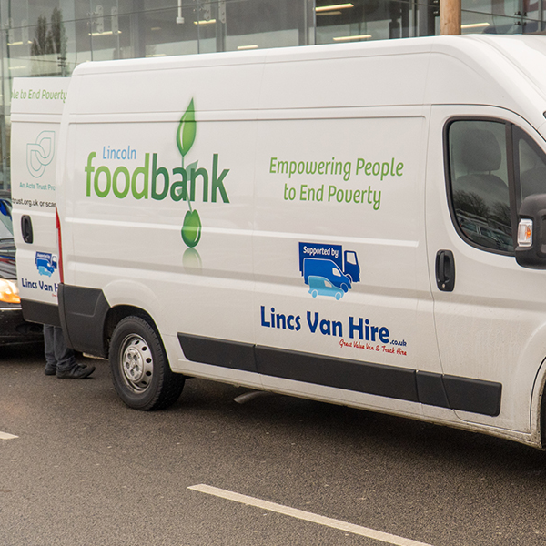
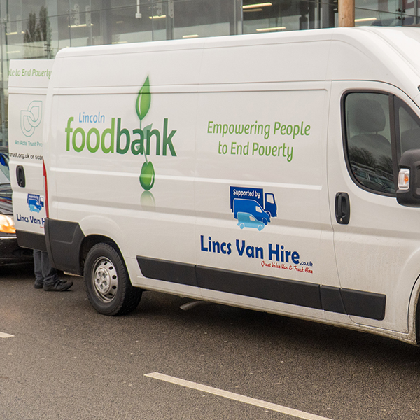

Hi my names Geoff and I live in rural Lincolnshire with my beautiful wife Helen. After a nasty fall left me an amputee, my established career as an engineer ended abruptly, little did I know when I started coding as a hobby that my true calling for programming had only just begun. Since then I have fallen in love with programming and developed a talent for interactive UI/UX web development.
If you have a hybrid/remote employment opportunity or would like to discuss work on a freelance basis, please don't hesitate to contact me. Thanks for taking the time to check out my site, if you would like to know a little more about how I got here, please refer to my software story below.
To quote Socrates “To know thyself is the beginning of wisdom”, unfortunately sometimes it can take a lifetime to become wise to yourself. Since school, I have always been good at, and have enjoyed working with, software and computers (don't worry this is not going that far back!) In one of my first jobs after leaving school, I distinctly remember the Technical Director, (a brilliant industrial chemist, who was exceedingly clever but nearly allergic to computers), summoning me into his office, to demand I show him how to add a degrees symbol to his document. A character map and Alt codes are fairly basic things, but after I showed him, he looked at me, not with approval (which would have been a lifetime achievement award in itself!), but rather like I was some sort of unofficial wizard... I was very fortunate to hit the workplace in the late 90's, where in factories and lots of other settings, computers were being used, but the bulk of any work was done on paper with job cards, time-sheets and offices full of sweet, older ladies, typing things up. In truth, sometimes it feels like a lifetime ago, but the joy of being in that time period was the need to build the software to hold the data. For a year I did little else but build smart spreadsheets and databases, to help the shop floor start to move away from pen and paper. My proudest projects at this time, were building a laboratory database/application, that took the chemical test data, calculated the results and stored the data. I think I enjoyed this project the most, as up until then, the calculation had to be done by someone with a bare minimum of an A-level in chemistry. The production line was 24/7 and as I was the most junior person holding those skills, it was down to me to be on call, sleeping all night never felt so good! I also built time-sheet software to kill the job sheets and quality control software, to identify patterns of failure. Later on, when a million pound ERP software system was implemented, I spent nearly two years on the implementation team, writing bills of materials, integrating databases and machinery. While I was at Dawson's, the company sponsored me on a HNC in mechanical engineering. During my time at college, I became very proficient at writing gcode, the computer language that is at the heart of all 3d milling machines and more relevant, today 3d printers. I could still write a programme to power a 3d printer. I'm not sure why I would, as gcode has now entirely moved into the computer generated wheelhouse. As James Dawson's was a materials-based business they also sponsored me through a Postgrad in Materials Science. This brings me back to my lack of wisdom in my early 20's. I had loved the work with software and now, with the benefit of hindsight, I can only scream “D'oh!”, at not moving myself in that direction. However, the worst is to come, when I instead chose to become a science teacher!! I have to ask myself now, how dumb can you be... but at the time it seemed like a good idea. I spent three years in the classroom and adored teaching but hated the crowd control aspect of being in the classroom. I left teaching after 3 years, desperate to get away and found myself joining an aerospace component manufacturer. Again, software stars in my work-life. I picked up the 3d cad software, Solidworks in a week, when the expectation was a month or two. I spent two years designing aircraft bearings with several of my designs being in use on the current A380 or the military A400M. I loved using the software but was ready for a new challenge and remembering the amazing time I had, had while writing software, I apply for not software roles but software sales roles, so beguiled by the slick salesmen, that I had spent two years working on the ERP with. I started working for the large multinational Zeppelin Systems as a salesman (yes the flying blimps people), although my field was in industrial machinery. The truth, is I am a lousy salesman. I find it almost impossible to lie, at least convincingly and would have to restrain myself from advising a competitors kit, when it was superior. But nevertheless, the workload needed managing and I successfully built a quotation generator in Microsoft Access, to replace the huge manual and massive amount of hand-typing that I had inherited. I built corporate manuals using raster graphics software, wrote articles for publication in industry magazines and although I was let go by the company at the end of the first year, largely because of the 2008 crash, they came and sought me out 18 months later. I mourned the loss of this position as I really enjoyed working with the vast majority of my colleagues and really liked my boss, the MD. Like a lot of people at this point though, looking for work in the post 2008 crash was hard, with not a lot of opportunities out there. At this point, I decided to take on the voluntary Foodbank Managers role for the local Foodbank. I also worked as hard as I could on my hobby of property renovation, so I could finish the house I was working on and sell it, in the event I needed to move out of county for work. With my house nearly finished and having loved my time managing foodbank, my previous boss rang me in December and asked if I would rejoin to take over the spares department. I was overjoyed, I had loved working for Zeppelin! Unfortunately two days before I started, my life was rocked. Some days will mark your life forever, marking a point when things will never be the same again. Whilst doing some work on my house, I went up to the loft to recharge the boiler. Whilst I was stood at the very top of the loft ladder, my foot in the last couple of rungs, the ladder, broke away from the loft and fell down, with me and my foot still on and in it. When I landed, I knew I was in trouble. I lifted my foot out of the ladder, only to find it dangling in mid-air, like it wasn't really attached any more. I had snapped my ankle like a chicken bone, forcing the bone that joins the foot and the leg, out of my ankle. I am extremely grateful for my soon to be boss at Zeppelin, who travelled to my hospital bed to tell me that the company still wanted me and that they would wait for me to recover. After a few months, I managed to start my new position and was doing well professionally. I had come back to take over a retiree's role and massively enjoyed organising the fully paper system he had employed (even printing off one word emails to file in a cabinet!!). To solve the “paper-gate” crisis, I developed a fully-featured customer relations manager (CRM), to track all quotes, their success or otherwise and store all the quotations and correspondence digitally. It really worked well; simplifying the role and it meant that when I did leave, my replacement did not have to be an engineer by training. Sadly, over this two year period, my physical recovery had not been progressing well. My injury had not healed properly, as I had caught a hospital super-bug infection from the injury. It took the hospital two years to get on top of it and by the time it was under control, it was too late, the bone had collapsed, leaving me with very little choice but to have my foot amputated. My boss was happy for me to carry on, but broken by the loss, I did not feel it was fair to him and my colleagues to be away for the 6 month recovery time the hospital was quoting. So I left to return to the care of my family, in the flat lands of Lincolnshire. After my operation, I found obtaining work in engineering nearly impossible. The fact I spent nearly all my time in a wheelchair at that point, really seemed to put employers off. However, as I'd spent a great deal of time working with large databases and my familiarity with SQL from my time implementing the ERP system, I found work at my local county council. There, I managed the large SQL schools and safeguarding databases, wrote business intelligence reports and dealt with freedom of information requests. Unfortunately, my injury had not finished impacting my life… While the operation to amputate had left me with a physically useable stump, I developed the complication of complex regional pain syndrome and extreme neuropathic pain. This ranges in sensation of a constant feeling of the missing foot being in scolding water, up to the physical sensation of having my toes cut off one by one. No-one wants to feel this kind of pain, so I was prescribed very large doses of an extremely powerful painkiller, specifically Pregabalin. These do work at reducing pain but are so strong, that they left me overly tired and collapsing after work. I set out to reduce the painkillers to a level that I could operate properly at. However, as the drug I was reducing was a powerful painkiller and a powerful anti-anxiety medication, I began to feel extreme anxiety and when the council decided to half the office space and cram us into a “call -centre” type environment, the anxiety became too much to deal with. My world spiralled. The medication side-effects made me feel almost agoraphobic. It was a fight for a life worth living and took years to overcome. However, I am overjoyed to say I won the battle! I went on to find my amazing wife Helen, who I love very much. Unfortunately, while the vast majority of my anxiety has lifted, the lower levels of medication I now take, leave me in a lot of pain. Focussed distraction is my best friend. In the process of trying to re-establish myself after a life changing ordeal, I tried craftsmanship and spent a lot of time turning artisan pens. The problem with that, was that no matter how much I extended the capabilities from my engineering skill set, such as making brand new materials and even learning Autodesk's Fusion 360 software, to make artistic creations on a 3d printer, it was impossible to make enough product from a chair, to establish it as anything other than a hobby. I did however build my first website, my one and only no-code site. Constantly searching for a role that I could do mainly from home, due to the pain and mobility issues and being a life long lover of computer games, I started training myself in games design, initially starting with learning Blender. I started out thinking this would be similar to 3d engineering design in Solidworks or Fusion 360. It is not! I then progressed to do a taster course in C#. It's at this point I'd like to come back to the quote from Socrates “To know thyself is the beginning of wisdom”. I am not unintelligent but this is the first time in my life I have started feeling wise. I don't just like code, or do it because I'm good at it, I do it because I'm passionate about it. The C# course was only a taster but I eagerly searched the large amounts of online resources that are available, keen to learn as much as could. I have since learnt HTML, CSS, vanilla JavaScript and PHP. Learning software development has been one of the most fun experiences of my life. I simply adore solving problems. When I finish a problem that has been causing me some issues, I feel like I've scored a goal at the Stretford end; its beyond addictive. So much so, that I am now looking for a hybrid/remote employment, where I can carry on the massive excitement of learning and achieving. It's taken me this long to be wise but at least now, I can move forward, self-aware in the knowledge that I'm exactly where I should have always been, a programmer!Skills List


My software story

 



Geoff Walker
Software Developer


.png)